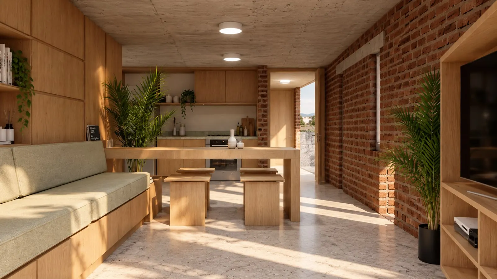

- Type
- Residential architecture
- Location
- San Juan del Río, Querétaro
- Year
- 2026
- Area
- 4 × 58 m²
- Status
- Conceptual proposal
- Process
-
- Idea
- Transformation
- Matter
Idea
Departamentos San Juan del Río was born from the search for a contemporary, affordable and functional housing alternative for single people or couples without children. Conceived as a set of rental homes, the project explores the possibilities of the studio apartment and questions the need for conventional divisions to define the different ways of living.
The proposal starts from a central idea: turning furniture into architecture.
A multifunctional element becomes the organizing axis of each apartment, combining sofa, dining table and closet in a single piece. More than an object, this piece of furniture acts as a spatial hinge, separating social and private areas without building walls that fragment the home.
This strategy makes the reduced floor area feel larger, favoring visual continuity and a fluid relationship between everyday activities.
The materiality responds to a search for constructive honesty. Rustic finishes and exposed materials build an identity of industrial character, where simplicity becomes a deliberate architectural expression.
The result is a proposal that seeks to balance economy, functionality and warmth, showing that the quality of a space does not depend only on its size, but on the intelligence with which it is organized.



Process
The main challenge was optimizing construction and finishing costs without compromising the living experience.
The answer was to reduce interior divisions and concentrate different functions in a single piece of furniture. This decision made it possible to rethink the traditional layout of a compact home, with one piece simultaneously meeting the needs of storage, rest, gathering and spatial organization.
The choice of exposed materials and rustic finishes responded both to economic criteria and to an aesthetic intention: letting materials express their own nature, avoiding unnecessary cladding.
In this way, economy of means is no longer understood only as a constraint and becomes a design tool.
Technical data
- Type
- Residential architecture / Multifamily housing
- Status
- Conceptual proposal.
- Area
- 4 apartments of approximately 58 m² each.
- Materials
- Exposed concrete, exposed brick, wood and metalwork.
- Images
- Digital architectural visualizations.
- Credits
- ARQUEMIST.

“When space is limited, architecture must multiply its possibilities.”